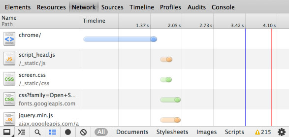

JSON View Layer
Another take on JSON + Grails
Created by Colin Harrington / @ColinHarrington
whoami
- Colin Harrington
- Principal Consultant - ObjectPartners
- colin.harrington@objectpartners.com
- @ColinHarrington
New World
Post Desktop devices.
Various Types of network connections
{ bandwidth, latency, gigabit, mobile, etc.}
New device classes
{ Laptop, Tablet, Mobile, Desktop }
Network Connectivity
{ LAN, Wifi, Cable, DSL, Fiber, LTE, 2G, 3G }
Bandwidth
Bandwidth

Latency

Tradeoff
- Modularity vs # of requests
- Performance :: Mobile
- Compress CSS/JS
- Bundling, minification, etc.

JSON
- Lingua franca
- Browsers
- Library & platform support
- node.js
- etc...
JSON Library & platform support
- Android
- iOS
- Arduino
- Java {Groovy, Scala, Clojure}
- C++
- .NET
- Python
- ...
JSONBuilder
Grails docsExample
<CODE>
Direct JSONBuilder API Access
new JSONBuilder().build { ... }.toString()
Example
<CODE>
Converter / Codec
-
grails.converters.JSON
something as JSON
-
encodeAsJSON
[foo: bar].encodeAsJSON()
Example
<CODE>
Custom Marshaller
JSON.registerObjectMarshaller(Class){o->}
- Custom JSON marshalling
Named configs
JSON.createNamedConfig("name") {cfg ->
cfg.registerObjectMarshaller(Class){c-> }
Using the config
JSON.use("name") { ... }
Grails is Spring with some opinions, conventions and Groovy Sugar, a plugin system and a whole lot of goodness, also GORM.
Spring ViewResolver
View resolveViewName(String viewName, Locale locale)
Custom Spring ViewResolver!
View resolveViewName(String viewName, Locale locale)viewName?.startsWith("JSON") new ... : null
Inner workings
- GrailsViewResolver (jsp & gsp)
- +GrailsConventionGroovyPageLocator
- +GroovyPagesTemplateEngine
- +GroovyPageLocator
-
GroovyPagesGrailsPlugin
jspViewResolver(GrailsViewResolver)
Other tools
- GSON https://code.google.com/p/google-gson/
- Grails GSON plugin http://grails.org/plugin/gson
- BSON http://bsonspec.org/